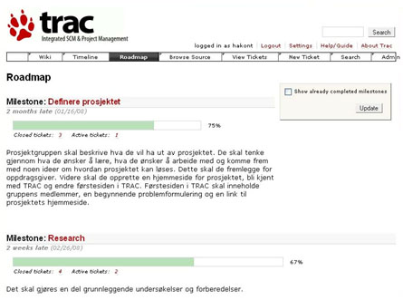

Collecting
WIKI import
WIKIPEDIA import
Tigere
Pumaer
Pitcairn Islands
Import Transformed XML
DTS
Fragments
Pop Fragments
Fragments in xlinks
Footnotes
Summaries
Demolinks
ModuleTOC
ModuleMAP
Path
Indexes
xlinks
Import Text
Import from database
Viner
Import XML
Vinliste
Import Text
Import Multiple Text
Popup
Import Text
Vinliste
This is a backup
This is a primary file
Collecting Module content
WIKI import
Testing import av WIKI fragments
Trac
Trac er et verkty som kan brukes i prosjektgjennomfring og andre former for samarbeid mellom mennesker. Verktyet gir mulighet for kunne planlegge arbeidet, dokumentere underveis samt i ettertid kunne spore arbeid som er utfrt. Systemet har en minimalistisk tilnrmingsform, slik at det er et enkelt prosjektstyringsverkty. I dette ligger det ogs at systemet er utviklet for i minst mulig grad ptvinge den eksisterende utviklingsprosessen styrende elementer. Dette kan vre en fordel for anvendelse i ulike didaktiske opplegg.
Vi hevder at systemet er egnet for utviklingsoppgaver som prosjekter i nringslivet og prosjekter i undervisningssammenheng, Dette med bakgrunn i den minimalistiske form. Det vil si at de er enkle inntalere og at terskelen for kunne anvende verktyet er lav. Vre resultat viser at selv for frstesemester studenter holder det med en enkel innfring i verktyene, samt litt veiledning fra studentassistenter.
Verktyet bruker wiki formatering [3] i sin behandling av tekst som er knyttet til organisering og gjennomfring av prosjekt, s som for eksempel: meldinger, kommentarer, beskrivelser og linker. Dette bidrar til en standardisert form slik at det er mindre risiko for at noen legger inn tekst som de andre i prosjektet kan ha problemer med se. Det er bemerke at det selvsagt er slik at vi i prosjektet kan produsere alle slags fileformater, som for eksempel: txt, doc, emx og jpg.
Her vises en klipp av web siden som brukes nr vi jobber med Trac:

Figur 3; Typisk eksempel p en oppstartside i et undervisningsprosjekt.
verst i figuren er det en samling med funksjoner som finnes i Trac. Denne delen vises hele tiden, mens resten av siden brukes til vise de data som er knytte til den valgte funksjonen.
Nr vi jobber med prosjektlignende oppgaver kan vi nr som helst enkelt se alle hendelser som er gjort tidligere i prosjektet og veien videre. Vi kan legge inn elementer som milepler (milestone), arbeidsoppgaver (ticket) og fritt lage komponenter (som typisk er: forskjellige typer dokumentasjon og programkode). Vi kan ogs lage relasjoner mellom de forskjellige elementene slik at det er enkelt spore tilbake i prosjektet.
Vi har prvd Trac p flere niver i studiet. Det er srlig enkelheten i funksjonaliteten som gjr den egnet for bruk i forbindelse med forskjellige didaktiske opplegg. Det at bruk av verkty kan bidra til at studentene fr mer ut av de aktuelle temaer for et kurs, enn at denne type verkty, bidrar negativt p grunn av sin kompleksitet eller arbeidsmengde, var en positiv erfaring for oss.
Aktuelle kurs
Programmering for web
Kurs for 3.klasse. Programmeringen innebærer: Python, javascript, XSLT. Det skal lages webapplikasjoner.
Programmering for web
Innføring i programmering
Dette er begynnerkurset i programmering for 1.klasse. Javaprogrammering
Innføring i programmering
Møtereferater
der Terje, Mari Ann, Håkon, Børre samles for å utveksle erfaringer.
- 26.september
Håkon, Terje, Børre.
Trolig lurt med hyppige møter i starten (ukentlige)
Gulrot i stedet for pisk når det gjelder bruk av teknikker og verktøy. (form på tickets, paiprogramming, testing, versjonering)
Rollen som "teknisk kyndig kontraktør" er trolig ganske god.
Førstkommende fredag blir det en gjennomgang i forelesningen av testing, sammen med en motivasjon for metodikken.
Det er ikke trivielt å synkronisere prosjekter og faglig progresjon styrt ved forelesninger. XP fordrer i en viss forstand at det faglige repetoiret er på plass tidlig.
- børre -
- 8. oktober
Tilstede: Børre, Håkon, Terje, Mari-Ann
Grupper er fordelt og tracer opprettet. SVN frivillig, og vil demonstreres av gruppelærerne hvis noen av gruppene viser interesse for det. Studentene tar kontakt med sin oppdragsgiver og avtaler møte. Møte hver uke i oppstarten, kan deretter se det litt an.
I forhold til rekkefølgen for gjennomgang av emner i kurset, passer det å starte med å la studentene lage en rapportmal (html), og deretter få på plass en klasse med metoder for å lese en mal, putte inn verdier for variablene i malen og lagre resultatet.
Noen har lite kjennskap til HTML. Lars Magnusson gir en introduksjon i øvingstimene denne uka.
Mari-Ann
- 15. oktober
Tilstede: Børre, Håkon, Terje, Mari-Ann
Fint å se de andre veilederne sine notater før egen veildening. Ulik nivå på grupper og medlemmer.
Børre kort referat fra midtsem. eval. Alle rimelig fornøyde. Ulik bruk av verktøyenes funksjonalitet. Prosjektene må bli ferdig. Oppdragsgiver sitt ansvar å ha en fungerende versjon. En gruppe som mener at oppdragsgiver drar prosjektet i gal retning.
Ta en oppsumerende samtale med gruppa om roller, fremdrift og nivå. Hvordan håndteres refactoring i gruppene.
Metoden kan også brukes til å ta tak i arbeidsmetoder, f.eks. at de følger gruppeundervisning og forelesninger.
Håkon Tolsby
- 29.oktober
Tilstede: Mari Ann, Håkon, Børre
Artikkel. Beholder strukturen som den ligger. Skriver fritt. Børre ber Ted å lage 4 nye brukere slik at vi er identifiserbare. Sender mail når dette er i orden.
Intervjuer. Vi tar sikte på å intervjue 2 grupper hver, en gruppe fra hvert kurs. Håkon lage et forslag til setting og rammer for spørsmål. Mari Ann og Børre varsler dette som del av kursevalueringen i de respektive kursene.
- børre -
- 12.november
Tilstede: Mari Ann, Håkon, Børre, Terje
Temaet for møtet var undersøkelsen av den pedagogiske modellen. Undersøkelsen skal gjennomføres i uke 47 og 48. Håkon la frem en plan for gjennomføringen. Det er viktig at alle legger inn aspekter som de ønsker å få studentene til å fortelle om i gjennomføringsplanen. Det ble avtalt et nytt møte fredag 16. november for gjennomføre en testing av intervjusituasjonen
Gjennomføringsplan
_håkon
- 19.november
Tilstede: Mari Ann, Håkon, Børre
Enighet om artikkel. Fordeling av resterende arbeid.
bs
- 3.desember
Tilstede: Mari Ann, Håkon, Børre
Enighet om artikkel. Fordeling av resterende arbeid.
bs
- 18.desember
Introspektiv intervju
Bruk tid på å forberede dere før intervjuet.
Børre og Mari-Ann intervjuer Terje og Håkon Terje og Håkon intervjuer Børre og Mari-Ann
Intervjuguide
- 18.desember
Intervjuer gjennomført, 0900 - 1200
Vi har fått penger 200.000 til prosjektet.
Planer videre:
- Skrive ut intervjuene. Håkon undersøker om vi kan få hjelp
- Lage stoff for interne nyheter, Terje
- Rekruttere til eksernt kurs. Børre sjekker
- Vi lager en fyldig intern rapport med alt vi har av erfaringer, tanker og intervjustoff, alle
- Vi planlegger en faglig rapport eller to, Håkon ser etter et godt publiseringssted
- Vi lager en håndbok for veiledere, alle
- Vi må oppdatere NU-rapporten i januar hvis den blir godtatt, alle
- Vi må drive litt internt misjonsarbeid, spesielt hvis det blir aktuelt med ny studieplan. Personalmøte eller egen forestilling.
børre s
- 23.januar
Tilstede: Mari Ann, Håkon, Terje, Børre
Oppsummering og arbeidsfordeling.
Vi har mottatt:
- Tildelingsbrev for prosjektet
- Tilbakemelding på artikkelforslag.
Prosjektet handteres slik:
- Tore Petter Engen fyller ut nødvendige formalia og returnerer avkrevd skjema.
- Børre S lager utkast til brev for å få igang kurs med eksterne deltagere.
- Vi må forberede presentasjon til seminar i Tromsø. Materialet for dette har vi trolig klart, men vi vil få nærmere kravspesifikasjon i mars.
Artikkelen handteres slik, alt skal være ferdig 10.mars:
- Håkon T tar ansvar for å skrive sammenhengen mellom mapper og XP-metodikk.
- Terje S tar ansvar for å beskrive verktøyene (Trac, SVN) bedre.
- Mari-Ann A tar ansvar for å restrukturere og forsterke de foreløpige analysene.
børre s
- 5.mars
Tilstede: Mari Ann, Håkon, Terje, Børre
Status artikkel.
Litt diskusjon om struktur:
- trenger illustrasjon av verktøy (milepæl, ticket)
- liste av hovedpunkter i oppsummeringen: rytme og tempo, forpliktelser, oppdragsgiverrollen, arbeidsdeling og koordinering, transparens, refleksjon.
- klargjøre hva som kan gjøres og hva som er gjort med tanke på formell og uformell evaluering av prosess.
Innholdet må i hovedsak være klart mandag 10.mars. Vi ber om utsettelse til 14.mars for innlevering.
Transkriberingene tikker inn.
Vi må passe på å søke om FoU tid til fortsettelse av prosjektet.
børre s
- 10.mars
Tilstede: Mari Ann, Håkon, Terje, Børre
Status artikkel.
Litt diskusjon om struktur.
Vi må passe på å søke om FoU tid til fortsettelse av prosjektet(bs).
Vi må lage vevside for prosjektet og fylle ut skjema i forbindelse med Tromsø-møtet.
børre s
- 7.april
Tilstede: Mari Ann, Håkon, Terje, Børre
Følgende skal skje:
- Ekstern kurs (Børre må ta seg sammen)
- Samlerapport. Mari-Ann er redaktør. Sier hva vi skal gjøre:
- Vi skriver to intervjuanalyser hver. Forsøksvis ferdig i april
- Metodebok. Terje skriver på delen om praktisk bruk av verktøy
- Webside for prosjektet. Børre fyller inn noe mer.
- Håkon kontakter Pettersen/Lauvås om samarbeid
- Håkon anviser utbetaling av penger fr intervjutranskripssjon
- Intervju av to hovedprosjektgrupper.
- Terje og Håkon intervjuer Børres gruppe
- Terje og Børre intervjuer Håkons gruppe
børre s
- 20.mai
Tilstede: Mari Ann, Håkon, Terje, Børre
Fordeling av arbeid i forbindelse med presentasjon av prosjektet på personalmøtet.
børre s
- 18.juni
Tilstede: Mari Ann, Håkon, Terje, Børre
Fordeling av arbeid i forbindelse med skriving av samlerapport. MA lager en ny wiki-side med disposison og arbeidsdeling.
Håndbok lages etter, og på grunnlag av, samlerapporten.
Minst 1 vitenskaplig rapport initieres underveis.
Disponering av prosjektmidler tas opp etter sommeren.
børre s
- 25.september
Tilstede: Mari Ann, Håkon, Terje, Børre
Planlegging av søknad. Intern frist for første runde 11.oktober.
Håkon og Børre skriver utkast på grunnlag av møtet.
børre s
WIKIPEDIA import
Testing import av WIKIPEDIA fragments
Tigere
Underarter
IUCN anerkjenner seks nålevende underarter. Flere av disse er truet av utryddelse. Mange av dem lever dessuten i så fjerne og uframkommelige strøk at man vitenskapelig sett ikke kan konkludere med at nye studier ikke vil kunne avdekke ny og uventet informasjon. Tre tidligere anerkjente underarter regnes alt som utdødd.
Sibirtiger

Sibirtiger (P. t. altaica) er en kritisk truet (CR) underart. Den kalles også amurtiger og er den fysisk største av alle underartene. Bestanden i Russland har siden 1996 hatt en positiv utvikling, og er på omlag 500 dyr, totalbestanden er estimert til å være omlag 600 [1]. I tillegg finnes nærmere 600 sibirtigre i fangenskap.
Sibirtigeren finnes først og fremst i Sikhote-Alinfjellene i Øst-Russland, men noen få holder også til i Changbaifjellene i Nordøst-Kina og helt nord i Nord-Korea.
Sørkinatiger
{kind=link}
Sørkinatiger (P. t. amoyensis) er en kritisk truet (CR) underart og kalles også amoytiger, xiamentiger og kinatiger. Det finnes i dag 47 (2004) sørkinatigre som overlever i 18 dyrhager, alle etterkommere av 6 viltfangede tigre.
Sørkinatiger er dessverre så godt som utryddet i vill tilstand. Forskere antar at det er færre enn 20 viltlevende individer igjen, og den har ikke vært observert av offisielle representanter siden tidlig på 1980-tallet. Fra Fujian-provinsen er det spredd rykter om en såkalt maltesertiger, som skal være blå i fargen og ha lysere grå striper langs sidene. Den har imidlertid ikke latt seg verifisere så langt. Om den eksisterer er den trolig i fargevarietet.
Indokinatiger
{kind=link}
Indokinatiger (P. t. corbetti) kalles også corbettstiger, og er en truet underart som først ble oppdaget og beskrevet i 1968.
Indokinatigeren lever i et stort område, som bl.a. inkluderer land som Kambodsja, Folkerepublikken Kina (sørlige deler), Laos, Myanmar (østlige deler), Thailand og Vietnam. Det er estimert at det finnes ca 1200–1800 individer igjen, men antallet minsker som følge av liten eller ingen beskyttelse i flere av landene. Såvidt kjent finnes det pr. 2005 ca 60 indokinatigre i fangenskap, fordelt på land i Asia og USA.
Fram til desember 2004 ble den også kalt malaysiatiger, men da oppdaget man at tigerne som levde i de mer sørlige strøkene var så unike at de måtte klassifiseres som en egen underart.
Malaysiatiger
{kind=link}
Malaysiatiger (P. t. jacksoni) er trolig en kritisk truet underart som holder til på Malayahalvøya i Malaysia. Den ble oppdaget av et team av forskere ledet av Stephen J. O'Brien. De tok for seg 134 tigre fra Russland, India, Kina og andre land i området og utførte en omfattende DNA-analyse av disse dyrenes genmateriale. Det ble da oppdaget at de sydlige tigrene på Malayahalvøya var nokså forskjellige fra indokinatigeren, og ble omklassifisert som en egen underart.
Malaysiatigeren er altså så lik indokinatigeren at de hittil har vært betraktet som en og samme underart, men det er distinkte forskjeller mellom dem. Den skal ha en liten utbredelse syd for Phuket i Thailand, men hovedbestanden finnes syd for Songkhla i Thailand og sydover inn i de sentrale fjellstrøkene på Malayahalvøya.
Sumatratiger
{kind=link}
Sumatratiger (P. t. sumatrae) er en kritisk truet (CR) underart som kun finnes på øya Sumatra i Indonesia, der den i all vesentlighet overlever i fem nasjonalreservater. Man tror den har vært isolert på øya i ca 10 000–12 000 år.
Moderne forskning med DNA har nylig avdekket at denne tigeren kanskje må reklassifiseres som en egen art (altså i stedet for en underart), selv om det er for tidlig å dra en slik konklusjon.
Man antar at ca 400–500 individer overlever i vill tilstand. I tillegg kommer ca 235 tigre som overlever i fangenskap, alle etterkommere av 37 viltfangende tigre. 61 tigre (32 hanner og 29 hunner) har blitt omplassert til øya Java.
Bengaltiger
{kind=link}
Bengaltiger (P. t. tigris) kalles også kongetiger og er den mest tallrike av dagens underarter. Den finnes i primært i India, selv om små populasjoner også eksisterer i Bangladesh, Bhutan, Nepal og deler av Kina.
Man har til nå antatt at det fantes omkring 3 000–4 750 bengaltigre igjen i verden, selv om tallene har vært usikre, hvorav cirka 3 642 i India (2002), men bruk av ny teknikk har gitt nye og svært nedslående estimater. En indisk rapport fra uke 8 i 2008 estimerer antallet tigre i Indida til kun 1 411 dyr. I tillegg kommer ca 200 bengaltigre som lever i fangenskap rundt om i verden. Bengaltigeren er mindre enn sibirtigeren, og gjerne mørkere og klarere i fargene. Det finnes også noen hvite eksemplarer.
Pumaer
Hunting and diet
A successful generalist predator, the cougar will eat any animal it can catch, from insects to large ungulates (over 500 kg). Like all cats, it is an obligate carnivore, feeding only on meat. The Mean weight of vertebrate prey (MWVP) was positively correlated (r=0.875) with puma body weight and inversely correlated (r=-0.836) with food niche breadth in all America. In general, MWVP was lower in areas closer to the Equator. Its most important prey species are various deer species, particularly in North America; mule deer, white-tailed deer, elk, and even large moose are taken by the cat. Other species such as Bighorn Sheep, wild horses of Arizona, domestic horses, and domestic livestock such as cattle and sheep are also primary food bases in many areas. A survey of North America research found 68% of prey items were ungulates, especially deer. Only the Florida Panther showed variation, often preferring feral hogs and armadillos.
Investigation in Yellowstone National Park showed that elk, followed by mule deer, were the cougar's primary targets; the prey base is shared with the park's gray wolves, with whom the cougar competes for resources. Another study on winter kills (November–April) in Alberta showed that ungulates accounted for greater than 99% of the cougar diet. Learned, individual prey recognition was observed, as some cougars rarely killed bighorn sheep, while others relied heavily on the species.
In the Central and South American cougar range, the ratio of deer in the diet declines. Small to mid-size mammals are preferred, including large rodents such as the capybara. Ungulates accounted for only 35% of prey items in one survey, approximately half that of North America. Competition with the larger jaguar has been suggested for the decline in the size of prey items. Other listed prey species of the cougar include mice, porcupine, and hares. Birds and small reptiles are sometimes preyed upon in the south, but this is rarely recorded in North America.
Though capable of sprinting, the cougar is typically an ambush predator. It stalks through brush and trees, across ledges, or other covered spots, before delivering a powerful leap onto the back of its prey and a suffocating neck bite. The cougar is capable of breaking the neck of some of its smaller prey with a strong bite and momentum bearing the animal to the ground.
Kills are generally estimated at around one large ungulate every two weeks. The period shrinks for females raising young, and may be as short as one kill every three days when cubs are nearly mature at around 15 months. The cat drags a kill to a preferred spot, covers it with brush, and returns to feed over a period of days. It is generally reported that the cougar is a non-scavenger and will rarely consume prey it has not killed; but deer carcasses left exposed for study were scavenged by cougars in California, suggesting more opportunistic behavior.
Pitcairn Islands
| Pitcairn Islands
Pitkern Ailen
|
||||||
|---|---|---|---|---|---|---|
|
||||||
|
Anthem: "Come ye Blessed" "God Save the Queen" |
||||||
|
Capital
(and largest city) |
Adamstown | |||||
| Official languages | English, Pitkern [ citation needed ] | |||||
| Ethnic groups | English, Polynesian, or (mixed) | |||||
| Government | British Overseas Territory | |||||
| - | Sovereign | Elizabeth II | ||||
| - | Governor | George Fergusson | ||||
| - | Mayor | Mike Warren | ||||
| Area | ||||||
| - | Total |
47 km2
18.1 sq mi |
||||
| Population | ||||||
| - | 2008 estimate | 50 (223rd (last)) | ||||
| - | Density | 1/km2 (197th) 2.7/sq mi |
||||
| Currency |
New Zealand dollar (
NZD
) |
|||||
| Time zone | (UTC-8) | |||||
| Internet TLD | .pn | |||||
| Calling code | 64 | |||||
{kind=link}
{kind=link}
{kind=link}
Import Transformed XML
Resultat
Beijing - 200m
| Name | Nation | Result |
|---|---|---|
| Usain Bolt | JAM | 19.30 |
| Churandy Martina | ANT | 19.82 |
| Shawn Crawford | USA | 19.96 |
| Walter Dix | USA | 19.98 |
| Brian Dzingai | NAM | 20.22 |
| Christian Malcolm | GBR | 20.40 |
| Kim Collins | KNA | 20.59 |
Resultat
Barcelona - 400m
| Name | Nation | Result |
|---|---|---|
| Susumu Takano | JPN | 45.18 |
| Quincy Watts | USA | 43.50 |
| Samson Kitur | KEN | 44.24 |
| Ian Morris | TTO | 44.25 |
| Ibrahim Ismail | QAT | 45.10 |
| Steve Lewis | USA | 44.21 |
| Roberto Hernandez Prendes | CUB | 44.52 |
| David Grindley | GBR | 44.75 |
DTS
Dates
Time
Stamp
Fragments
Std properties

Script-defined fragments
Pop Fragments
og en masse text
Fragments in xlinks
Simple links
 bs was here leaving footprints
bs was here leaving footprints
Footnotes
Duften minner mest om epler og har et lite streif av gjærbakst. Syrefrisk og harmonisk smak med god fylde, fin syrefasthet i ettersmaken. Duft av modne epler og gjær. Syrlig anslag, deretter streif av honning i smaken. Litt lite nyansert. Aromatisk duft av solbærblader, stikkelsbær, nesle og urter. Smaksrik og lang, med frisk bitterhet i ettersmaken. Rik duft av mineraler, sitrus og toast. Velbalansert og fyldig smak med både syretørrhet og fruktsødme. Kompleks og lang ettersmak med en liten brentkarakter i avslutningen. Brentpreg i duften med toastkarakter.
Brentkarakter og sødme av rosiner1Rosiner er egentlig tørkede druer og aprikos i duften. Tørkete frukter i smaken, vinen virker litt for oksydert, og har en relativt tørr ettersmak. Rødfiolett farge, og ferskt bærpreg med brent toastkarakter i duften. Bløt og fyldig morellsødme pluss fatpreg i smaken. Avrundet ettersmak, prisgunstig hverdagsvin for nå-konsum. Kompleks duft av solbær, lær og eikefat. Mykt anslag og moden smak med fine smaksnyanser. God fylde og fin trrhet i ettersmaken. Parker gir 86 poeng og antyder holdbarhet til 2007.
Fersk stil med duft av kirsebær 2Bær fra kirsebærtreet. Spesielt de japanske kirsebærtrærne er kjente for sin blomsterprakt, urter og eikefat. Saftig bærsmak, middels fylde og frisk ettersmak med lett snerp. Konsentrert solbæraroma i duften, fint balansert mot et edelt preg av sedertre. Bløtt smaksanslag, god fylde, fin syretørrhet og lett snerp. Solbærblader og solbær er tydeligste elementer i duften.
- Rosiner er egentlig tørkede druer
- Bær fra kirsebærtreet. Spesielt de japanske kirsebærtrærne er kjente for sin blomsterprakt
Summaries
bs was here leaving footprints
Demolinks
ModuleTOC
ModuleTOC | Sub1 | Sub2 | Sub23 | Sub3
Sub1 | Sub2 | Sub3
Sub1
Text1
Sub2
Text2
Sub23
text23
Sub3
Text3
ModuleMAP
[Welcome][WIKI][WIKIPEDIA][Transformed Out][Transformed In][DTS][Fragments][PopFragments][Fragmentlinks][Foots][Summaries][Demolinks][Collecting][ModuleTOC][ModuleMap][Path][Index][xlink][Encoding][Database][ImportXML][ImportTXT][ImportScriptTXT][ImportScriptDB][ImportMultiTXT][Pops][Expand][Backup]
bs was here leaving footprints
|
testing wxt PIs
Welcome testing wxt PIs
test wiki import
WIKI test wiki import
test wikipedia import
WIKIPEDIA test wikipedia import
test transformed output
Transformed Out test transformed output
test transformed input
Transformed In test transformed input
Date Time Stamp
DTS Date Time Stamp
bs was here
Fragments
bs was here
testing popfragments
PopFragments testing popfragments
testing popfragments
Fragmentlinks testing popfragments
bs was here leaving footprints
Foots
bs was here leaving footprints
testing collection of summaries
Summaries testing collection of summaries
testing demolinks
Demolinks testing demolinks
testing collections
Collecting testing collections
testing local TOC
ModuleTOC testing local TOC |
testing Module map
testing path
Path testing path
testing ixword and ixtable
Index testing ixword and ixtable
testing xlink and xlinklist
xlink testing xlink and xlinklist
testing encoding
Encoding testing encoding
testing database access
Database testing database access
testing xml import
ImportXML testing xml import
testing text import
ImportTXT testing text import
testing text import from script
ImportScriptTXT testing text import from script
testing text import from script
ImportScriptDB testing text import from script
testing text import
ImportMultiTXT testing text import
testing popups
Pops testing popups
testing ajax expand
Expand testing ajax expand
testing backup
Backup testing backup |
Indexes
ixwords
ixtable
Import Text
Import of xml
Import of fragments defined in the script
Import from database
| type | name | dice |
|---|---|---|
| red | Casa de la Ermita Monastrell 2002 | 5 |
| red | Castillo de Aguarón Garnacha 2001 | 4 |
| red | Preferido Tempranillo 1998 | 4 |
| red | Pirineos Merlot-Cabernet 2000 | 4 |
| red | Marqués de Ballestar Reserva 1999 | 4 |
| red | Alex Merlot 2001 | 4 |
| red | Campillo Gran Reserva 1994 | 4 |
| red | Cuvée Christer Berens Jumilla 2000 | 5 |
| red | Muga Reserva 1999 | 6 |
| red | Torre Oria Gran Reserva 1996 | 4 |
| red | Faustino V Reserva 1998 | 4 |
| red | Sabika Tempranillo Cabernet Sauvignon 2001 | 3 |
| red | Viñas de Miedes 2002 | 1 |
| white | Marqués de Murrieta Ygay Capellanía Gran Reserva 1997 | 6 |
| white | Pazo de Barrantes Albariño 2001 | 5 |
| red | Castillo Ygay Gran Reserva Especial 1994 | 6 |
| red | Castillo Ygay Gran Reserva Especial 1978 | 6 |
| red | Marqués de Murrieta Ygay Reserva 1999 | 5 |
| red | Marqués de Murrieta Ygay Mazuelo 2000, magnum 150 cl | 5 |
| red | Castillo Ygay Gran Reserva 1991, jeroboam 300 cl | 5 |
| red | Castillo Ygay Gran Reserva Especial 1970 | 5 |
| red | Marquès de Murrieta Gran Reserva 1996 | 4 |
| white | Viñas del Vero Gewürztraminer Colección 2002 | 4 |
| white | Vegaliente Albariño 2001 | 3 |
| white | Santiago Ruiz 2002 | 2 |
| red | Viña Izadi Crianza 2000 | 6 |
| red | Finca Giusana Reserva 1996 | 5 |
| red | Birkedal Hartmann Tinto de Navarra | 4 |
| sparkling | Freixenet Cordon Negro, Brut | 4 |
| sparkling | Codorníu Clasico Brut | 4 |
| sparkling | Freixenet Cordon Negro Seco | 3 |
| sparkling | Codorníu Clasico Seco | 3 |
| sparkling | Freixenet XXI (21) Seco | 3 |
| sparkling | Raimat Chardonnay Brut | 3 |
| sparkling | Segura Viudas Brut Vintage 1999 | 3 |
| sparkling | Trepat 1998 | 3 |
| sparkling | Freixenet XXI (21)Brut | 2 |
| sparkling | Freixenet Reserva Real Brut | 2 |
| sparkling | Segura Viudas Reserva Heredad Brut | 1 |
| red | Protocolo | 4 |
| red | Gran Feudo Crianza 2000 | 4 |
| red | Bracamonte Tempranillo Reserva 1998 | 4 |
| white | Viña Esmeralda 2002 | 4 |
| red | Montesierra Merlot Cabernet 2001 | 6 |
| red | Gran Feudo Reserva 1998 | 6 |
| red | Dragón Tempranillo 2001 | 5 |
| red | Marqués de Monistrol Cabernet-Tempranillo Crianza 2000 | 5 |
| red | Monasterio de Santa Ana Monastrell 2002 | 5 |
| red | Vega Esteban Crianza 1999 | 5 |
| red | Berberana Alarde Reserva 1999 | 5 |
| red | Amigo | 4 |
| red | Bach Vino de Mesa | 4 |
| red | Marqués de Chivé Tempranillo Crianza 2000 | 4 |
| red | Santana Tempranillo 2000 | 4 |
| red | Viña Extrisima Bach 2000 | 4 |
| red | Marqués de Griñon Tempranillo 2001 | 4 |
| red | Piedemonte Tempranillo 2002 | 4 |
| red | Berberana dAvalos Tempranillo 2001 | 4 |
| red | Raimat Abadia 2000 | 4 |
| red | Durius Tempranillo 2000 | 4 |
| red | Viña Albali Reserva 1999 | 4 |
| red | Coronas 2001 | 4 |
| red | Marqués de Monistrol Reserva Privada 1998 | 4 |
| red | Viña Alberdi Reserva 1999 | 6 |
| red | Amigo Comercial | 4 |
| red | Inurrieta 2002 | 5 |
| white | Hermanos Lurton 2003 | 6 |
| white | Viña Esmeralda 2003 | 5 |
| red | Marqués de Cáceres Gran Reserva 1994 | 6 |
| red | Faustino I Gran Reserva 1995 | 5 |
| red | Santana Tempranillo 2000 | 4 |
| red | La Riojana | 5 |
| red | Lisandro Tempranillo-Cabernet 2000 | 3 |
| red | Marqués de Vitoria Crianza 1999 | 5 |
| white | Marqués de Cáceres 2002 | 3 |
| red | Montecillo Crianza 2000 | 5 |
| red | Faustino V Reserva 1999 | 4 |
| red | Montesierra Merlot Cabernet 2001 | 6 |
| red | Viña Alberdi Reserva 1999 | 6 |
| red | Casa de la Ermita 2002 | 5 |
| red | Faustino V Reserva 1999 | 5 |
| red | Marqués de Murrieta Ygay Reserva 1999 | 5 |
| red | Marqués de Chivé Tempranillo Crianza 2000 | 4 |
| red | Coto de Imaz Reserva 1999 | 4 |
| white | Casa Maria Blanco 2003 | 5 |
| white | Amigo Blanco | 2 |
| rose | Enate Cabernet Sauvignon Rosado 2003 | 3 |
| sparkling | Codorníu Clasico Seco | 3 |
| red | Condado de Haza Crianza 2001 | 6 |
| red | Marqués de la Concordia 2002 | 5 |
| red | Solaz 2001 | 5 |
| red | Viña Izadi Crianza 2000 | 5 |
| red | Tinto Pesquera Crianza 2001 | 5 |
| red | Solaz 2001 | 4 |
| red | Raimat Abadia 2001 | 4 |
| red | Torres Coronas Wine in Glass 2001 | 4 |
| red | Condado de Haza Reserva 2000 | 4 |
| white | Señorita Blanca | 2 |
| white | San Valentin 2003 | 2 |
| red | Gran Feudo Reserva 1998 | 6 |
| red | Muga Reserva 2000 | 6 |
| red | Faustino I Gran Reserva 1995 | 6 |
| red | Marqués de Monistrol Cabernet-Tempranillo Crianza 2001 | 5 |
| red | Palacio de la Vega Cabernet Sauvignon Tempranillo Crianza 1999 | 5 |
| red | Agramont Reserva 1999 | 5 |
| red | Faustino V Reserva 1999 | 5 |
| red | Marqués de Cáceres Crianza 2001 | 4 |
| red | Viña Izadi Crianza 2000 | 4 |
| red | Marqués de Murrieta Ygay Reserva 1999 | 4 |
| red | Condado de Haza Crianza 2001 | 4 |
| red | Palacio de la Vega Cabernet Sauvignon Tempranillo 2000 | 5 |
| red | Mas la Plana Cabernet Sauvignon 1998 | 5 |
| red | Valcorso Monastrell 2003 | 5 |
| red | Berberana Dragón Tempranillo 2002 | 4 |
| red | Montesierra Merlot Cabernet 2002 | 4 |
| sparkling | Marqués de Monistrol Reserva Brut | 6 |
| red | Cepa Gavilán 2002 | 4 |
| red | Dominio de la Peseta Roble 2003 | 3 |
| red | El Coto Crianza 1998/2000 | 5 |
| red | Campo Viejo Reserva 1998 | 4 |
| red | Marqués de Riscal Reserva 2000 | 4 |
| red | Marqués de Vitoria Gran Reserva 1995 | 4 |
| red | Campo Viejo Crianza 2001 | 3 |
| red | Lagunilla Reserva 1999 | 2 |
| red | Don Jacobo Gran Reserva 1994 | 2 |
| red | Paternina Gran Reserva 1994 | 1 |
| sparkling | Marqués de Monistrol Reserva Brut | 6 |
| white | Gran Viña Sol Chardonnay 2003 | 3 |
| red | Copos Real Reserva 1998 | 3 |
| red | Estola Reserva 2000 | 3 |
| red | Torre Oria Gran Reserva 1996 | 3 |
| red | Torrelongares Garnacha 2003 | 2 |
| red | Siglo "1881" 2002 | 2 |
| white | Marques de Riscal Rueda Superior 2003 | 6 |
| red | Gran Coronas Reserva 2000 | 3 |
| red | Las Campanas Crianza 2000 | 6 |
| red | Señorio de los Llanos Reserva 2000 | 6 |
| red | Las Campanas Reserva 1997 | 6 |
| red | Castillo de Almansa Colección 2003 | 5 |
| red | Castillo de Almansa Reserva 2000 | 5 |
| red | Señorio de los Llanos Gran Reserva 1998 | 5 |
| red | Señorío de los Llanos Crianza 2001 | 4 |
| red | Viña Albali Reserva 1999 | 4 |
| red | Viña Albali Crianza 2000 | 3 |
| sparkling | Soler-Jové Brut Reserva | 5 |
| red | Pittacum Mencía 2002 | 4 |
| red | Museum Real Reserva 2001 | 3 |
| red | Raimat Abadia 2001 | 6 |
| red | Marqués de Chivé Tempranillo Crianza | 4 |
| red | Casa de la Ermita Organic 2003 | 4 |
| red | Amigo | 3 |
| red | Geni Tempranillo | 3 |
| white | Marqués de Cáceres Blanco 2003 | 4 |
| red | Castell de Falset 2000 | 5 |
| red | Imus 2003 | 4 |
| red | Vigua 2002 | 4 |
| red | Loxarel Reserva 1999 | 4 |
| red | Ops de Loxarel 2003 | 3 |
| sparkling | Rondel Extreme Brut | 2 |
| red | Palacio de la Vega Tempranillo Reserva 1999 | 5 |
| red | Alto Cuevas Tempranillo 2004 | 4 |
| red | Marqués de Cáceres Reserva 1996 | 4 |
| red | Torre Albéniz Reserva 1999 | 4 |
| red | Castell Mont Boi Gran Reserva 2000 | 3 |
| red | Scala Dei Negre 2003 | 3 |
| red | Rincón de los Escribanos Tempranillo | 2 |
| red | Juan de Juanes 2003 | 2 |
| rose | Marqués de Monistrol Rosé 2004 | 4 |
| rose | Agramont Cabernet Sauvignon Rosé 2004 | 4 |
| red | Solferino 2003 | 3 |
| white | Casa Maria Sauvignon Blanc 2004 | 5 |
| white | Vall Major 2004 | 2 |
| white | Trampal Pardina 2004 | 1 |
| white | Galiciano Godello Dia 2003 | 1 |
| red | Las Campanas Reserva 1997 | 6 |
| red | Muga Reserva 2001 | 5 |
| red | Campo Viejo Gran Reserva 1998 | 4 |
| red | Banda Azul Crianza 2001 | 3 |
| red | Tarsus 1999 | 3 |
| red | Ysios Reserva 2000 | 3 |
| red | El Copero 2003/2004 | 2 |
| red | Masia Perelada 2003 | 2 |
| white | Marqués de Murrieta Ygay Capellanía Gran Reserva 1998 | 6 |
| white | Viña Izadi Blanco 2003 | 5 |
| red | Muga Reserva 2001 | 5 |
| red | Marqués de Murrieta Ygay Reserva 2000 | 4 |
| white | Códax Albariño 2004 | 2 |
| red | Rejadorada Crianza 2001 | 6 |
| red | Vega Sauco el Beybi 2004 | 4 |
| red | Lorca Monastrell 2004 | 3 |
| red | Ceperos 2003 | 3 |
| red | Taurus Roble 2003 | 2 |
| red | Don Jacobo Crianza 2001 | 2 |
| red | Viña Cientocinco (105) 2004 | 5 |
| red | Torres Celeste 2003 | 3 |
| red | Rioja Vega Reserva 1999 | 3 |
| white | Viña Esmeralda 2004 | 4 |
| red | Caracol Serrano Tinto Joven 2004 | 5 |
| red | Enrique Mendoza Pinot Noir Crianza 2001 | 4 |
| red | Muga Reserva 2001 | 6 |
| red | Viña Ardanza Reserva 1998 | 6 |
| red | Monte Negro Tinto Joven 2003 | 5 |
| red | Rejadorada Crianza 2001 | 5 |
| red | Marqués de Cáceres Gran Reserva 1995 | 5 |
| red | Finca Villacreces Reserva 2000 | 5 |
| red | Montecillo Gran Reserva Especial 1981 | 5 |
| red | Valcorso Monastrell 2004 | 4 |
| red | Tinto Pesquera Crianza 2002 | 4 |
| red | Merry Christmas Tempranillo | 3 |
| red | Lagunilla Gran Reserva 1998 | 3 |
| red | Torre Oria | 1 |
| sparkling | Marqués de Monistrol Reserva Brut | 6 |
| sparkling | Freixenet Reserva Real Brut | 3 |
| sparkling | Freixenet Brut Nature 2002 | 2 |
| sparkling | Codorníu Brut Cuvée Raventos | 1 |
| white | Azumbre Verdejo 2004 | 5 |
| white | Carqueixal Albariño 2004 | 4 |
| white | Marquès de Sangor Xarel-Lo Parellada 2004 | 3 |
| white | Itsas Mendi Hondarrabi Zuri 2004 | 3 |
| white | Casal Novo Godello 2004 | 3 |
| red | Pujanza 2001 | 6 |
| red | Divus Monastrell 2001 | 6 |
| red | Peique Selección de Viñedos Viejos 2002 | 6 |
| red | Pie Franco 2000 | 6 |
| red | Castillo de Maluenda Viñas Viejas 2004 | 5 |
| red | Azabache Mazuelo Crianza 2001 | 5 |
| red | Coto de Hayas 2004 | 4 |
| red | Castillo de Jumilla Monastrell 2004 | 4 |
| red | Cuvée Christer Berens Monastrell 2004 | 4 |
| red | Azabache Garnacha 2004 | 4 |
| red | Tamaral Roble 2004 | 4 |
| red | Clos Corriol 2004 | 4 |
| red | Lagunilla Gran Reserva 1999 | 3 |
| red | Baltasar Gracián Garnacha 2003 | 3 |
| red | Muñarrate 2004 | 2 |
| red | Marqués de Chivé Tempranillo Reserva 2001 | 5 |
| red | Abanico Cabernet Sauvignon Syrah Merlot 2004 | 5 |
| red | Carmelo Rodero Tinto Joven 2004 | 5 |
| red | Callejo 2004 | 5 |
| red | Perlat Syrah 2002 | 5 |
| red | Amadís 2000 | 5 |
| red | Gos Monastrell 2004 | 4 |
| red | Cruz de Piedra Garnacha 2004 | 4 |
| red | Solar Viejo Crianza 2001 | 4 |
| red | Henrik Ibsen Tempranillo Merlot 2004 | 4 |
| red | Oferente Monastrell 2004 | 4 |
| red | Carmelo Rodero Tinto Roble 2004 | 4 |
| red | Rotllan Torra Reserva 2000 | 4 |
| red | Aventino Tempranillo 2004 | 4 |
| red | Summa Varietalis 2001 | 4 |
| red | Eméritus 2000 | 4 |
| red | Carmelo Rodero Crianza 2003 | 3 |
| red | Valdepusa Cabernet Sauvignon 2002 | 3 |
| red | Valdepusa Syrah 2002 | 3 |
| red | El Prado Tempranillo Cabernet | 2 |
| red | Tabanico | 2 |
| red | Valdepusa Petit Verdot 2002 | 2 |
| red | Marqués de dos Aguas | 2 |
| red | Casa de la Ermita Monastrell Crianza 2001 | 6 |
| red | Casa de la Ermita Organic 2004 | 4 |
| red | Marqués de Arienzo Reserva 2000 | 4 |
| red | El Miracle Tempranillo Shiraz 2003 | 2 |
| red | Medulio Mencia 2004 | 1 |
| red | Raimat Abadia 2003 | 5 |
| red | Amigo | 4 |
| red | Marqués de Chivé Tempranillo Crianza | 4 |
| red | Palacio de la Vega Cabernet Sauvignon Tempranillo 2000 | 4 |
| red | Berberana Dragón Tempranillo 2004 | 4 |
| red | Casa de la Ermita Organic 2004 | 4 |
| type | name | dice |
|---|---|---|
| white | Epoca Santagostino Grillo-Chardonnay 2002 | 5 |
| red | Rutilus Sangiovese 2002 | 5 |
| red | Selciaia Rosso di Montepulciano 2002 | 5 |
| red | Valdibà Dolcetto di Dogliani 2001 | 5 |
| red | Villa Matilde Falerno del Massico 2001 | 5 |
| red | Montestefano Barbaresco Riserva 1997 | 5 |
| red | Montestefano Barbaresco Riserva 1997 | 5 |
| red | Abbona Barolo Pressenda 1999 | 5 |
| red | Feudi Bordonaro Nero dAvola Sangiovese 2001 | 4 |
| red | Fabiano Bardolino 2002 | 4 |
| red | Formulæ Chianti 2002 | 4 |
| red | Borgo Reale Salice Salentino 2002 | 4 |
| red | Giordano Primitivo di Manduria 2001 | 4 |
| red | Mottura Primitivo di Manduria 2000 | 4 |
| red | Vigna Muntrivé Barbera dAsti 1998 | 4 |
| red | Tesauro Recioto della Valpolicella 2000 | 4 |
| white | Cuvée Christer Berens T DA Bianco da Tavola | 3 |
| red | Collection Frithjof Nicolaysen Sangiovese | 5 |
| red | Cuvée Christer Berens M DA | 4 |
| red | Collection Frithjof Nicolaysen Montepulciano 2001 | 4 |
| red | Broens Beste | 3 |
| red | Collection Frithjof Nicolaysen Montepulciano 2001 | 3 |
| red | Le Crosare Ripasso 2001 | 6 |
| red | Zenato Valpolicella Classico Superiore Ripassa 2000 | 6 |
| red | Barbaresco 1997 | 6 |
| red | Terlo Ravera Barolo 1998 | 6 |
| red | Valpolicella Classico 2002 | 4 |
| red | Rosso dAbruzzo | 5 |
| red | Cirò Rosso Classico 2001 | 6 |
| red | Barbera dAlba San Michele 2000 | 6 |
| red | Vigna Pedale 2000 | 6 |
| red | Vajra Barbera dAlba 2000 | 6 |
| red | Casavecchia 2001 | 6 |
| red | Cigliuti Serraboella Barbera dAlba 2001 | 6 |
| red | Passo Rosso del Veneto 2000 | 6 |
| red | Pelissero Long Now 2001 | 6 |
| red | Acinatico Amarone della Valpolicella Classico 2000 | 6 |
| red | Barbera dAlba Piani 2002 | 5 |
| red | Acinatico Valpolicella Classico Superiore Ripasso 2001 | 5 |
| red | Masciarelli Montepulciano dAbruzzo 2001 | 5 |
| sparkling | Ferrari Brut | 5 |
| sparkling | Gancia Asti | 4 |
| red | Casafrassi Chianti Classico 2001 | 5 |
| red | Nicolon Barbera dAlba 2001 | 5 |
| red | Sabazio Rosso di Montepulciano 2002 | 4 |
| red | Refosco dal Peduncolo Rosso 2001 | 3 |
| red | Rosso di Montalcino 2001 | 3 |
| white | Soave Classico San Michele 2002 | 6 |
| white | Cuvée Christer Berens Trebbiano dAbruzzo 2002 | 4 |
| red | Boheme | 5 |
| red | Collection Frithjof Nicolaysen Sangiovese 2001 | 5 |
| red | Pasqua Primitivo Salento 2002 | 5 |
| red | Villa Tonino Nero dAvola 2001 | 5 |
| red | Mezzomondo Negroamaro 2002 | 5 |
| red | Fortino | 4 |
| red | Terriero Sangiovese 2002 | 4 |
| red | Santagostino Nero dAvola Syrah 2000 | 4 |
| red | Cuvée Christer Berens San Marzano Primitivo 2001 | 4 |
| red | Cuvée Christer Berens Montepulciano dAbruzzo 2002 | 4 |
| red | Chiaramonte Nero dAvola 2001 | 4 |
| red | Feudo Monaci Primitivo de Puglia 2002 | 4 |
| red | Col-di-Sasso Sangiovese & Cabernet Sauvignon 2002 | 3 |
| red | Mezzomondo Negroamaro | 6 |
| red | Boheme | 5 |
| red | Rosso dAbruzzo | 5 |
| red | Oeno Sangiovese di Toscana 2001 | 5 |
| red | Collection Frithjof Nicolaysen Valpolicella Classico Ripasso 2002 | 5 |
| red | Cappella Rosso di Puglia IGT | 4 |
| red | Viola Nero dAvola Cabernet Sauvignon | 4 |
| red | Collection Frithjof Nicolaysen Sangiovese | 4 |
| red | Montalto Nero dAvola-Sangiovese | 3 |
| white | Forchir Sauvignon Blanc Soresere 2003 | 3 |
| red | Vigneti di Torbe Ripasso Valpolicella Classico Superiore 2000 | 6 |
| red | Mannara Primitivo-Merlot 2002 | 5 |
| red | Il Satiro Rosso 2000 | 5 |
| red | Forchir Cabernet Franc Braidate 2002 | 3 |
| red | Barbera dAlba San Michele 2001 | 5 |
| sparkling | Martini Asti | 5 |
| sparkling | Falchetto Brachetto dAcqui 2003 | 5 |
| sparkling | Fontanafredda Asti | 4 |
| white | Il Falchetto Moscato dAsti Tenuta del Fant 2003 | 6 |
| white | Moscato dAsti 2002 | 4 |
| white | Vajra Moscato dAsti 2002 | 4 |
| white | Il Falchetto Langhe Arneis 2001 | 4 |
| red | Tacchino Barbera del Monferrato 2001 | 5 |
| red | Masciarelli Montepulciano dAbruzzo 2001 | 5 |
| red | Ser Gioveto 1999 | 5 |
| red | Libera Barbera dAsti 2000 | 4 |
| rose | Il Mimo 2003 | 5 |
| red | Masi Campofiorin Ripasso 2001 | 5 |
| white | Soave Classico San Michele 2003 | 6 |
| white | Saracco Moscato dAsti 2003 | 6 |
| red | Zenato Valpolicella Classico Superiore 2001 | 5 |
| rose | Rosaura 2003 | 6 |
| white | Masi Levarìe Soave Classico Superiore 2002 | 3 |
| red | Villa Antinori Chianti Classico Riserva 2000 | 6 |
| red | Villa Borghetti Valpolicella Classico 2002 | 4 |
| red | Masi Bonacosta Valpolicella Classico 2002 | 3 |
| red | Cirò Classico 2001 | 6 |
| red | Barco Reale di Carmignano 2002 | 6 |
| red | Zenato Valpolicella Classico Superiore Ripassa 2000 | 6 |
| red | Barbaresco 1999 | 6 |
| red | Fenocchio Barolo Bussia Riserva 1997 | 6 |
| red | Fenocchio Barbera dAlba Superiore 2002 | 5 |
| red | Mara Valpolicella Classico Superiore 2001 | 5 |
| red | Selvapiana Chianti Rufina 2001 | 5 |
| red | Cuvée Christer Berens M dA 2003 | 4 |
| white | Monte Alto Soave Classico Superiore 2002 | 5 |
| red | Torrevento La Rocca 2003 | 5 |
| rose | Santi Medici Salento Rosato 2003 | 5 |
| sparkling | Santo Stefano Moscato dAsti 2003 | 6 |
| sparkling | Asti Dolce Millesimato 2003 | 5 |
| sparkling | Saracco Moscato dAsti 2003 | 4 |
| white | Bianco di Custoza 2003 | 6 |
| red | Col Solera Barbera 2003 | 6 |
| red | Vajra Langhe Rosso 2002 | 6 |
| red | Rosso dAbruzzo | 5 |
| red | Vigna Ottieri Beneventano Rosso 2003 | 5 |
| red | Cavalchina Bardolino 2003 | 5 |
| red | Zaccagnini Montepulciano dAbruzzo 2002 | 5 |
| red | Angelo Barbera | 4 |
| red | Trionfo 2003 | 4 |
| red | Col-di-Sasso Sangiovese & Cabernet Sauvignon 2002 | 4 |
| red | Collection Frithjof Nicolaysen Valpolicella Classico Ripasso 2002 | 4 |
| red | Santi Medici Salento Rosso 2001 | 4 |
| red | Due Palme Squinzano Rosso 2002 | 3 |
| red | Boheme | 4 |
| red | Mezzomondo Negroamaro | 4 |
| red | Vigneti di Torbe Ripasso Valpolicella Classico Superiore 2000 | 5 |
| white | Equilibrio 2003 | 4 |
| white | Albana di Romagna 2003 | 4 |
| white | Broens Beste Cataratto | 2 |
| red | Veneroso Tenuta di Ghizzano 2000 | 6 |
| red | Da Luca Primitivo Merlot 2003 | 5 |
| red | Terreno Chianti Classico 2001 | 5 |
| red | Barbera dAlba Superiore 2001 | 5 |
| red | Da Luca Primitivo Merlot 2003 | 4 |
| red | Lagrein 2003 | 4 |
| white | Planeta Chardonnay 2002 | 6 |
| white | Sanct Valentin Sauvignon Blanc 2003 | 5 |
| red | Zaccagnini Montepulciano dAbruzzo 2002 magnum | 5 |
| red | Trionfo 2003 | 4 |
| red | Vajra Langhe Rosso 2002 | 6 |
| red | Barbera dAlba 2002 | 6 |
| red | Cigliuti Briccoserra 2001 | 6 |
| red | Barbera dAlba San Michele 2003 | 5 |
| red | Dolcetto dAlba Colombé 2003 | 5 |
| red | Vajra Dolcetto dAlba 2003 | 5 |
| red | Selvapiana Chianti Rufina 2001 | 5 |
| red | Ripassa Valpolicella Superiore 2001 | 5 |
| red | Barbera dAlba Piani 2003 | 5 |
| red | Fenocchio Nebbiolo Langhe 2000 | 5 |
| red | Langhe San Guglielmo 1998 | 5 |
| red | Cirò Classico 2002 | 4 |
| red | Vigna Pedale 2001 | 6 |
| red | Barbaresco 1999 | 6 |
| red | Torriglione Barbera dAlba 2003 | 6 |
| red | Valpantena Corvina 2003 | 5 |
| red | Piastraia Bolgheri 2000 | 5 |
| red | Barbaresco Pajé Riserva 1999 | 5 |
| red | Pelissero Barbaresco Vanotu 1999 | 5 |
| red | Einaudi Barolo Nei Cannubi 1999 | 5 |
| red | Due Aquile | 4 |
| red | Vigna Vecchia Groppone Barbera dAlba Superiore 2001 | 4 |
| red | Fontanafredda Nebbiolo 2002 | 4 |
| red | Almondo Roero 2001 | 4 |
| red | Ratti Barolo Marcenasco 1999 | 4 |
| red | Vigna Pedale Riserva 2001 | 6 |
| red | Barbaresco 2000 | 6 |
| red | Formulæ 2002 | 4 |
| red | Campo Ceni Formulae 2002 | 4 |
| red | Selvapiana Chianti Rufina 2002 | 4 |
| red | Masi Campofiorin Ripasso 2001 | 6 |
| red | Vigneti di Torbe Ripasso Valpolicella Classico Superiore 2000 | 6 |
| red | Barbera dAlba 2002 | 6 |
| red | Rosso di Montalcino 2002 | 6 |
| red | Masi Grandarella 1999 | 6 |
| red | Acinatico Amarone della Valpolicella Classico 2000 | 6 |
| red | Zenato Valpolicella Classico Superiore 2001 | 5 |
| red | Zaccagnini Montepulciano dAbruzzo 2002 | 5 |
| red | Ripassa Valpolicella Superiore 2001 | 5 |
| red | Domìni Veneti Valpolicella Classico Superiore 2002 | 4 |
| red | Brolo di Campofiorin 1998 | 4 |
| red | Amarone della Valpolicella Classico 1999 | 3 |
| white | Solvold Langhe Chardonnay 2003 | 4 |
| red | Torrevento La Rocca 2003 | 5 |
| red | Montepulciano dAbruzzo 2003 | 5 |
| red | Solvold Barbera dAlba Superiore 2001 | 5 |
| red | Castello di Farnetella Chianti Colli Senesi 2001 | 6 |
| red | Rosso di Montalcino 2002 | 6 |
| red | Banfi Brunello di Montalcino 1999 | 6 |
| red | Villa Antinori Chianti Classico Riserva 2001 | 5 |
| red | Barbi Brunello di Montalcino 1998 | 5 |
| red | Col-di-Sasso Sangiovese & Cabernet Sauvignon 2002 | 4 |
| red | Barco Reale di Carmignano 2002 | 4 |
| red | Selvapiana Chianti Rufina 2002 | 4 |
| red | Villa Cafaggio Chianti Classico 2002 | 4 |
| sparkling | Rotari Arte Italiana Brut | 4 |
| sparkling | Canaletto Pinot Grigio Cuvée Brut | 2 |
| white | Ben Ryé Passito di Pantelleria 2003 | 6 |
| white | Pantelleria Passito Liquoroso 2002 | 5 |
| white | Villagrande Malvasia delle Lipari Passito 2002 | 5 |
| white | Verdicchio dei Castelli di Jesi Classico 2003 | 4 |
| white | Botter Monreale 2003 | 4 |
| white | Inycon Fiano 2003 | 3 |
| red | Rosso Virzí 2003 | 5 |
| red | Passomaggio 2002 | 5 |
| red | Pojo di Lupo Nero dAvola 2002 | 5 |
| red | Cappella Nero dAvola 2003 | 4 |
| red | Rupìcolo Castel del Monte DOC 2003 | 4 |
| red | Copertino DOC 2000 | 4 |
| red | Candido Salice Salentino DOC 2001 | 4 |
| red | Vitiano 2003 | 4 |
| red | I Feudi di Sicilia Nero dAvola 2003 | 4 |
| red | Benuara Nero dAvola Syrah 2002 | 4 |
| red | Orphéus Etna Rosso 1998 | 4 |
| red | Santa Tresa Cerasuolo di Vittoria 2003 | 4 |
| red | Nerojbleo Nero dAvola 2002 | 4 |
| red | Pradai Nero dAvola 2003 | 3 |
| red | De Valier Nero dAvola 2003 | 3 |
| red | Cusumano Nero dAvola 2003 | 3 |
| red | Villagrande Etna Rosso 2002 | 3 |
| red | Piani Noce Dolcetto dAlba DOC 2003 | 3 |
| red | Barbera dAlba DOC 2002 | 2 |
| white | Planeta La Segreta Bianco 2003 | 6 |
| white | Pietramarina Etna Bianco Superiore 2000 | 6 |
| white | Planeta Chardonnay 2003 | 6 |
| white | Regaleali 2003 | 4 |
| white | Leone dAlmerita 2003 | 4 |
| white | Malvasia delle Lipari Passito 2002 | 4 |
| white | Tasca dAlmerita Chardonnay 2001 | 3 |
| white | Camastra Nero dAvola Merlot 2001 | 6 |
| white | Planeta Santa Cecilia 2001 | 6 |
| white | Planeta Cerasuolo di Vittoria 2003 | 5 |
| white | Benanti Lamorèmio 1999 | 5 |
| white | Tasca dAlmerita Cabernet Sauvignon 2001 | 5 |
| white | Planeta La Segreta Rosso 2003 | 4 |
| white | Benanti Rovitello 1999 | 4 |
| white | Rosso del Conte 2001 | 4 |
| white | Regaleali Nero dAvola 2002 | 4 |
| red | Langhe San Guglielmo 1998 | 6 |
| red | Farina Montepulciano dAbruzzo 2003 | 5 |
| red | Riul Refosco dal Peduncolo Rosso 2001 | 5 |
| red | Tanè 2003 | 4 |
| red | Cantalupo Ghemme 2000 | 4 |
| red | Scaligeri Valpolicella 2003 | 3 |
| red | Torrevento La Rocca 2003 | 6 |
| red | Col Solera Barbera 2003 | 6 |
| red | Mezzomondo Negroamaro | 6 |
| red | Da Luca Primitivo Merlot 2003 | 6 |
| red | Cuvée Christer Berens M dA 2003 | 5 |
| red | Valpantena Corvina 2003 | 5 |
| red | Rosso dAbruzzo | 5 |
| red | Boheme | 4 |
| red | Collection Frithjof Nicolaysen Montepulciano | 4 |
| red | Collection Frithjof Nicolaysen Sangiovese | 4 |
| red | Oeno Sangiovese di Toscana 2003 | 4 |
| red | Cappella Rosso di Puglia IGT | 3 |
| red | Col-di-Sasso Sangiovese & Cabernet Sauvignon 2002 | 3 |
| red | Farina Montepulciano dAbruzzo | 3 |
| red | Canaletto Montepulciano dAbruzzo | 3 |
| red | Vajra Langhe Rosso 2003 | 5 |
| red | Vigneti di Torbe Ripasso Valpolicella Classico Superiore 2001 | 5 |
| red | Barbaresco 2001 | 5 |
| white | Campanaro Fiano di Avellino 2003 | 6 |
| white | Falanghina Sannio 2004 | 5 |
| white | Greco di Tufo 2004 | 5 |
| white | Privilegio Irpinia Bianco 2001 | 5 |
| white | Beneventano Bianco 2004 | 4 |
| white | Fiano di Avellino 2004 | 4 |
| red | Rubrato Irpinia Aglianico 2003 | 6 |
| red | Taurasi 2000 | 6 |
| red | Piano di Montevergine Taurasi Riserva 1999 | 6 |
| red | Serpico Irpinia Aglianico 2001 | 5 |
| red | Serpico Irpinia Aglianico 2000 | 4 |
| rose | Rosaura 2004 | 4 |
| sparkling | Arione Asti | 5 |
| sparkling | La Pieve Pinot Chardonnay Brut | 1 |
| sparkling | Le Bottaie Faè Extra Dry 2003 | 1 |
| white | Poderi di Carlo Sauvignon 2004 | 6 |
| white | Paladin Manzoni Bianco 2003 | 5 |
| white | Val dei Molini Garganega 2004 | 4 |
| white | Tono Manzoni 2003 | 4 |
| white | Colterenzio Pinot Bianco 2004 | 4 |
| white | Novalis Manzoni 2003 | 4 |
| white | Turian Ribolla Gialla 2003 | 4 |
| white | Il Dardo Lugana 2003 | 3 |
| white | Castello di Porcìa Tocai Friulano 2004 | 3 |
| white | Monte del Frá Bianco di Custoza 2004 | 3 |
| white | Kaltern Pinot Bianco 2004 | 3 |
| white | Cà Lustra Pinot Bianco 2003 | 3 |
| white | Brixner Eisacktaler Sylvaner 2003 | 3 |
| white | Brixner Eisakcktaler Kerner 2003 | 3 |
| white | Tralivio Verdicchio dei Castelli di Jesi Classico Superiore 2001 | 3 |
| white | Lemuse Bianco di Custoza 2004 | 2 |
| red | Quattro Vicariati 2000 | 6 |
| red | Cuvée Christer Berens Salento 2003 | 5 |
| red | Farnese Montepulciano dAbruzzo 2003 | 5 |
| red | Torrevento Castel del Monte 2003 | 4 |
| red | Tormaresca Negroamaro Cabernet 2001 | 4 |
| red | Soloperto Primitivo di Manduria 2003 | 4 |
| red | Isole e Olena Chianti Classico 2003 | 4 |
| red | Rèmole 2003 | 3 |
| rose | Donna Marzia Negramaro 2004 | 2 |
| rose | Santi Medici Salento Rosato 2004 | 1 |
| red | Langhe Rosso 2004 | 6 |
| red | Barbera dAlba Superiore 2003 | 6 |
| red | San Michele Barbera dAlba 2003 | 6 |
| red | Vigna Cua Longa Barbera dAsti 2000 | 6 |
| red | Dolcetto dAlba 2004 | 5 |
| red | Vigna Muntrivé Barbera dAsti 2001 | 5 |
| red | Barbera dAlba Piana 2003 | 5 |
| red | Barbera dAlba Piani 2003 | 4 |
| red | Dolcetto dAlba Rossana 2003 | 4 |
| red | Rosso Scarpa 2001 | 4 |
| red | Langhe Nebbiolo 2003 | 4 |
| red | Barbaresco Nubiola 2002 | 4 |
| rose | Il Mimo 2004 | 6 |
| rose | Villa Gemma Montepulciano d Abruzzo Cerasuolo 2004 | 5 |
| rose | Feudi di San Marzano Rosato Salento 2004 | 4 |
| rose | Rosaura 2004 | 4 |
| rose | Boffa Gran Buchet 2004 | 4 |
| red | Domìni Veneti Valpolicella Classico Superiore 2003 | 5 |
| red | Cavalchina Bardolino 2004 | 5 |
| red | Valpolicella Classico 2004 | 5 |
| red | Allegrini Valpolicella Classico 2004 | 5 |
| red | Moro 2003 | 4 |
| red | Viviani Valpolicella Classico 2003 | 4 |
| red | Di Majo Norante Terra Degli Osci Sangiovese 2003 | 3 |
| red | Sigillo Primo Primitivo Salento 2003 | 3 |
| red | Saraceno Leverano 2003 | 2 |
| red | Negro Roero 2003 | 2 |
| red | Corte Giara Ripasso Valpolicella Superiore 2003 | 5 |
| white | Tre Vigne Grillo 2004 | 3 |
| red | Monte Antico 2003 | 6 |
| red | Chianti Gonfalone 2004 | 4 |
| red | Poppiano Chianti Riserva 2001 | 4 |
| red | «Il» Decugnano dei Barbi 1999 | 4 |
| red | Cotogni Sangiovese 2004 | 3 |
| red | Le Mandorlae 2004 | 3 |
| red | Placido Chianti 2003 | 3 |
| red | LArdì Dolcetto dAcqui 2004 | 3 |
| red | Paolo Toscano Chianti Classico 2003 | 3 |
| red | Villa Patrizia 2003 | 2 |
| red | Rosso Piceno 2004 | 4 |
| red | Rosso Piceno Superiore Montetinello 2003 | 4 |
| red | Col dOrcia Rosso di Montalcino 2003 | 4 |
| red | Col dOrcia Brunello di Montalcino 2000 | 4 |
| white | Montalto Cataratto-Chardonnay 2004 | 4 |
| red | Da Luca Alto Barbera dAsti 2003 | 5 |
| red | Da Luca Syrah Sangiovese 2004 | 4 |
| red | Fontecuoia Rosso 2003 | 4 |
| red | Barbera dAlba 2003 | 6 |
| red | Barbera dAlba Serraboella 2003 | 6 |
| red | Barbera dAlba 2003 | 6 |
| red | Barbera dAlba Bricco delle Viole 2003 | 6 |
| red | Brancaia Tre 2003 | 4 |
| red | Souli Braida Dolcetto dAlba 2004 | 4 |
| sparkling | Ferrari Brut | 6 |
| sparkling | Rotari Arte Italiana Brut | 5 |
| sparkling | Casabianca Prosecco di Valdobbiadene Brut | 5 |
| sparkling | Fontanafredda Asti 2004 | 5 |
| sparkling | Franciacorta Gran Cuvée Pas Operè 1999 | 5 |
| sparkling | Cadel Bosco Franciacorta Brut Dosage Zèro 1999 | 5 |
| sparkling | Arione Asti | 4 |
| sparkling | Cinzano Asti | 4 |
| sparkling | Argeo Prosecco Spumante | 4 |
| sparkling | Martini Asti | 4 |
| sparkling | Fontanafredda Asti | 4 |
| sparkling | CaBertaldo Prosecco Brut | 4 |
| sparkling | Ruggeri Prosecco Frizzante | 4 |
| sparkling | Santo Stefano Prosecco Dry 2003 | 4 |
| sparkling | Giustino B. Prosecco Extra Dry 2004 | 4 |
| sparkling | Bellavista Franciacorta Cuvée Brut | 4 |
| sparkling | Gancia Asti | 3 |
| sparkling | Cinzano Prosecco | 3 |
| sparkling | Quartese Ruggeri Prosecco | 3 |
| sparkling | Prosecco Frizzante Ombra 2004 | 3 |
| sparkling | Cartizze Prosecco Superiore Dry 2003 | 3 |
| sparkling | Cadel Bosco Franciacorta Brut | 3 |
| white | Pagus Soave 2004 | 3 |
| red | Lago di Corbara 2002 | 4 |
| red | Vigna Flaminio Brindisi 2001 | 4 |
| red | Mezzacorona Merlot 2004 | 3 |
| red | Rosso dei Grilli Merlot & Cabernet 2004 | 3 |
| red | Mottura Civitella 2004 | 3 |
| red | Frà Diavolo 2004 | 3 |
| red | Morellino di Scansano 2003 | 2 |
| white | Cumera Organic Inzolia 2004 | 1 |
| red | Rosso Piceno Piediprato 2003 | 6 |
| red | Rosso Piceno 2004 | 5 |
| red | Rosso Piceno Superiore Montetinello 2003 | 5 |
| red | Proemio Castel del Monte 2003 | 3 |
| red | Villagrande Etna Rosso 2002 | 3 |
| red | Cumera Organic Sangiovese 2004 | 2 |
| red | Cumera Organic Montepulciano dAbruzzo 2003 | 1 |
| red | Cumera Organic Nero dAvola 2004 | 1 |
| white | Nes Passito di Pantelleria 2004 | 5 |
| white | Arzimo Passito 2004 | 4 |
| white | Coos Ramandolo 2003 | 3 |
| white | Carcera Soave Classico 2004 | 2 |
| white | Taburno Falanghina 2004 | 2 |
| red | Quintarelli Valpolicella Classico Superiore 1998 | 6 |
| red | Rubioso Passito 2004 | 4 |
| red | Monprivato Barolo 2000 | 4 |
| red | Bonotto Raboso Passito 2002 | 3 |
| red | 35 Parallelo Negroamaro 2004 | 2 |
| red | Ferliga Montepulciano dAbruzzo 2004 | 2 |
| red | Poggio al Tufo Rompicollo 2004 | 2 |
| red | Campo Santa Lena Valpolicella Classico 2003 | 2 |
| red | Carnevale Barbera del Monferrato de la Rocchetta 2003 | 2 |
| red | Chianti Classico Riserva 2000 | 2 |
| red | Haas Moscato Rosa 2003 | 2 |
| red | Poggio Gagliardo Montescudaio 2003 | 1 |
| red | Mezzomondo Negroamaro | 6 |
| red | Da Luca Primitivo Merlot 2004 | 6 |
| red | Oeno Sangiovese di Toscana 2004 | 6 |
| red | Negroamaro 2003 | 5 |
| red | M dA Cuvée Christer Berens 2004 | 5 |
| red | Montepulciano dAbruzzo Collection Frithjof Nicolaysen | 5 |
| red | Rosso dAbruzzo | 4 |
| red | Valpantena Corvina 2004 | 4 |
| red | Boheme | 3 |
Viner
Import XML
Ålesund is not a city in Østerrike, but André lives there
Ingress
Whoever this is

1.paragraf
3.paragraf
- GNU Free Documentation License: http://www.gnu.org/licenses/fdl.html
- GNU's definisjon av "free software" : http://www.gnu.org/philosophy/free-sw.html
Transformed
Vinliste
white wines from Chile

Tidied
| xpath (mandatory) | Any xpath expression that identifies a nodeset that will be treated like a XML-fragment. |
| location mandatory, but optional in templates | The URI of the file we want to import from. In templates the uri parameter is usually skipped. In this case all content files owned by the module in the script are searched for appropriate content. |
| transformation (optional) | A transformation identifier or a location for a transformationfile. This transformation may have parameters: T(name='ole' address='halden') |
| tidy (optional) | When the input has no XML-prolog, or when we expect tags that are not wellformed, we can ask obama to attempt to tidy the text. possible values are yes and no. Default is no. |
| encoding (optional) | You can spesify expected encoding if the tidy option is used, otherwise it has no effect. Default encoding is default (UTF-8 if not set in script). |
| id (optional) | An id that match the id of the actual xmlimort in script. has only meaning when this element has no location. |
Import Text
Hello
I am parsed
# convert on output
def setPrint():
""" Convert Unicode -> UTF-8"""
(e,d,sr,sw) = codecs.lookup('utf-8')
unicode_to_utf8 = sw(sys.stdout)
sys.stdout = unicode_to_utf8
# convert on output
def setPrint():
""" Convert Unicode -> UTF-8"""
(e,d,sr,sw) = codecs.lookup('utf-8')
unicode_to_utf8 = sw(sys.stdout)
sys.stdout = unicode_to_utf8
<?xml version="1.0" encoding="ISO-8859-1"?> <xsl:stylesheet version="1.0" xmlns:xsl="http://www.w3.org/1999/XSL/Transform"> <xsl:output method="xml" version="1.0" encoding="UTF-8" indent="yes"/> <xsl:template match="/"> <geonames> <xsl:apply-templates select="//country"/> </geonames> </xsl:template> <!-- for each country --> <xsl:template match="country"> <xsl:element name="country"> <xsl:attribute name="geonameId"> <xsl:value-of select="geonameId"/> </xsl:attribute> <xsl:attribute name="countryName"> <xsl:value-of select="countryName"/> </xsl:attribute> </xsl:element> </xsl:template> </xsl:stylesheet>
private void buttonRemove_Click(object sender, EventArgs e)
{
// update possible edits before we delete (and reload)
if (this.borresDataSet.HasChanges())
this.personTableAdapter.Update(this.borresDataSet);
// remove selected
int ix=dataGridView1.CurrentRow.Index;
DataGridViewRow row=dataGridView1.Rows[ix];
int id = Convert.ToInt32(row.Cells[0].Value);
string navn=Convert.ToString(row.Cells[1].Value);
String adr =Convert.ToString(row.Cells[2].Value);
String tlf = Convert.ToString(row.Cells[3].Value);
if (MessageBox.Show(this, "Vil du virkelig fjerne: " + navn,
"fjerne",MessageBoxButtons.YesNo)==
DialogResult.Yes)
{
personTableAdapter.Delete(id, navn, adr, tlf);
this.personTableAdapter.Fill(this.borresDataSet.person);
}
}
function simplepopup(theURL,wname,wstyle)
{
if(wstyle=='*')
wstyle='scrollbars=yes,resizable=yes,width=600,height=600,status=no';
try{
newwindow=window.open(theURL, wname, wstyle);
if (window.focus) {newwindow.focus()}
}
catch(E){
// ??
alert('If you have blocked pop-ups\n Try Ctrl-Alt when clicking');
}
}
Import Multiple Text
Popup
Some indexwords
It is not many similarities between Napoleon and my neighbour Hansen.
Import Text
klikk to view part of dom, before and after expansion
Transformations
Initially expanded
Vinliste
white wines from Frankrike
<?xml version="1.0" encoding="ISO-8859-1"?> <xsl:stylesheet version="1.0" xmlns:xsl="http://www.w3.org/1999/XSL/Transform"> <xsl:output method="xml" version="1.0" encoding="UTF-8" indent="yes"/> <xsl:template match="/"> <geonames> <xsl:apply-templates select="//country"/> </geonames> </xsl:template> <!-- for each country --> <xsl:template match="country"> <xsl:element name="country"> <xsl:attribute name="geonameId"> <xsl:value-of select="geonameId"/> </xsl:attribute> <xsl:attribute name="countryName"> <xsl:value-of select="countryName"/> </xsl:attribute> </xsl:element> </xsl:template> </xsl:stylesheet>
Vinliste
white wines from Frankrike
This is a backup
The file you requested for module Backup is not availabe.
This is a primary file
Available for module Backup